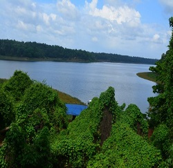

Jatayu Earth’s Center, also known as Jatayu Nature Park or Jatayu Rock, is a park and tourism centre at Chadayamangalam in Kollam district of Kerala. It stands at an altitude of 350m (1200ft) above mean sea level. Jatayu Nature Park is holding the distinction of having the world’s largest bird sculpture (200 feet (61 m) long, 150 feet (46 m) broad, 70 feet (21 m) in height and having 15,000 square feet (1,400 m2)
Read moreTangasseri Lighthouse or Thangassery Lighthouse is situated at Tangasseri in Kollam city of the Indian state of Kerala. It is one of the two lighthouses in the Kollam Metropolitan Area and is maintained by the Cochin Directorate General of Lighthouses and Lightships. Wikipedia
Read moreSasthamcotta Lake or Sasthamkotta Lake, also categorized as a wetland, is the largest fresh water lake in Kerala, a state of India on the south of the West Coast. The lake is named after the ancient Sastha temple located on its bank. Wikipedia
Read more